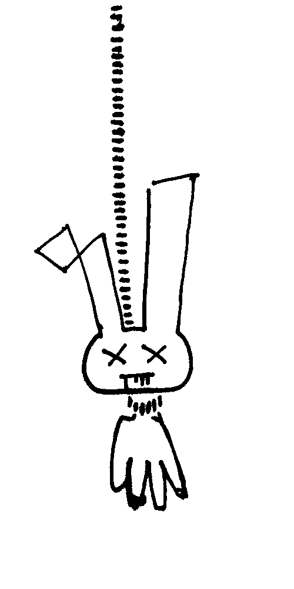

КНИГА ТРАВМ ЗАЧЕМ
REC :
Мысли преследуют меня?
Самое странное что когда я думаю о какой-то идее долго она истязает мое мышление, чем дольше я о чем-то думаю тем сильнее мозоль от этой мысли кровоточит.
Жизнь превращается в цикл и чем больше вещей напоминают о мысли тем глубже она впитывается в мое повседневное сознание. Чтобы обрести покой мне нужно отпускать мысли воплощать их в графике, творчестве, ремесле.
Спрятав мысль достаточно глубоко от своего ума я получаю шанс освободиться и впредь вспоминать о ней без горечи.
